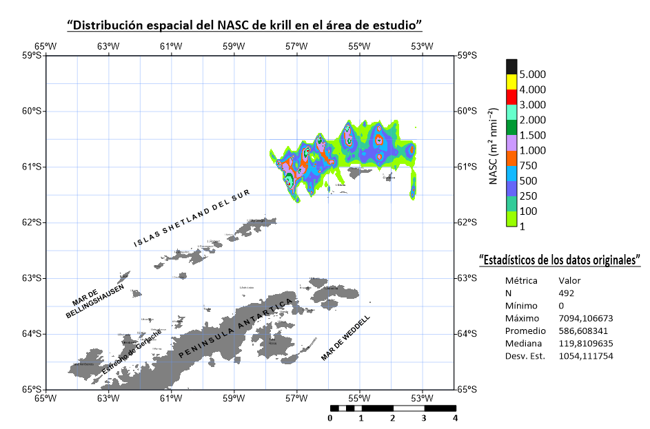
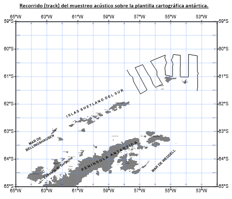

01 / Objetivo
Representar la variación espacial
El objetivo del trabajo fue transformar registros de posición geográfica y NASC de un muestreo acústico en una superficie interpolada, para visualizar patrones de agregación en el área de estudio antártica.
El NASC se expresa aquí en m² nmi⁻² y describe la señal acústica integrada. En este proyecto no se convierte en captura ni en biomasa directa.

02 / Datos
492 observaciones originales
El informe describe una bitácora en krill.xlsx con longitud (Lon_M), latitud (Lat_M) y NASC. Los estadísticos siguientes proceden del informe; no se han recalculado a partir de la hoja original.
| Estadístico | Valor |
|---|---|
| Observaciones | 492 |
| Mínimo | 0 |
| Máximo | 7094,11 |
| Promedio | 586,61 |
| Mediana | 119,81 |
| Desviación estándar | 1054,11 |
El promedio supera ampliamente la mediana: predominan los valores bajos y un número reducido de observaciones alcanza valores altos.
03 / Metodología
Del recorrido al mapa
- Representar el recorrido. Las coordenadas se utilizaron en su orden original para generar una polilínea de 492 vértices y superponerla a la cartografía antártica.
- Preparar la interpolación. A las 492 observaciones se añadieron 377 puntos de delimitación con NASC = 0. El conjunto de entrada tuvo 869 puntos; los ceros añadidos son una decisión de modelado, no nuevas mediciones.
- Interpolar en Surfer. Se utilizó Point Kriging con orden de deriva polinomial 0. El dominio se restringió aproximadamente a longitudes −57,88° a −53,18° y latitudes −61,65° a −60,14°.
- Elegir una escala legible. Se emplearon intervalos crecientes —1, 100, 250, 500, 750, 1000, 1500, 2000, 3000, 4000 y 5000— para distinguir valores bajos e intermedios y los núcleos de mayor NASC.
- Integrar la cartografía. El mapa se incorporó a una plantilla con la Península Antártica y las Islas Shetland del Sur como contexto regional.
Nota sobre la grilla: el informe indica 100 × 34 nodos; el archivo krill.grd entregado contiene 100 columnas y 33 filas. Esta diferencia entre versiones queda pendiente de aclaración.

04 / Resultados e interpretación
Una distribución heterogénea
Según la interpretación del informe, los núcleos de mayor NASC se concentran principalmente en el sector occidental, aproximadamente entre 57,5° O y 55,5° O. Hacia los extremos de las transectas y el sector oriental, cercano a 54° O–53° O, predominan valores bajos.
El trabajo muestra cómo la extensión de la grilla y la clasificación de colores influyen en la lectura del resultado. La superficie permite explorar la distribución de la señal acústica en el área analizada.
05 / Alcance
Cómo interpretar este resultado
- La superficie es una interpolación: no todos sus nodos son lugares donde se tomaron observaciones.
- Los puntos de delimitación con valor cero condicionan el resultado; no demuestran ausencia de krill en esas posiciones.
- El informe no presenta validación cruzada ni un mapa de incertidumbre. Por tanto, esta página no atribuye una precisión cuantificada a la interpolación.
- Los mapas se reproducen tal como aparecen en el informe. El análisis corresponde al área y al conjunto descritos, no a toda la distribución antártica del krill.
Créditos y fuente
Descargar el informe completo (PDF)
Copia de publicación con el código de matrícula ocultado. Conserva el contenido académico y las figuras del informe original.
Autor: Cristian Rafael Huamani Arroyo.
Institución: Universidad Nacional Federico Villarreal, Facultad de Pesquería.
Docente: Prof. Federico Iriarte.
Contenido adaptado del Informe Técnico — Aplicación de Surfer en la interpolación y representación espacial del NASC de krill, de 22 de septiembre de 2026. Mapas extraídos del informe del autor. La fuente de datos se identifica en ese documento como krill.xlsx; la campaña no se detalla allí.